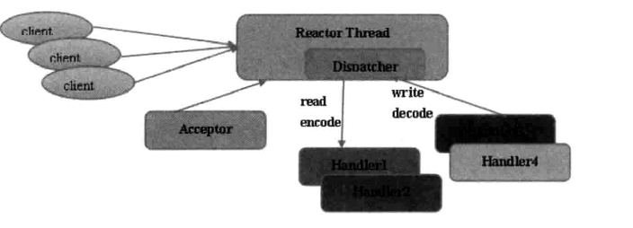
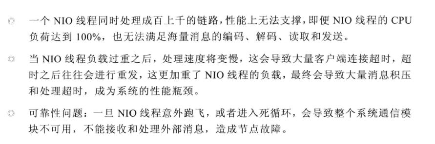
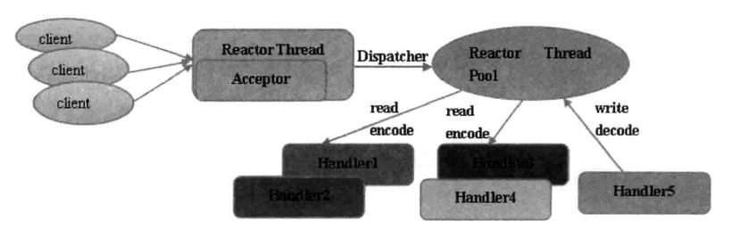
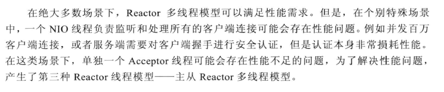
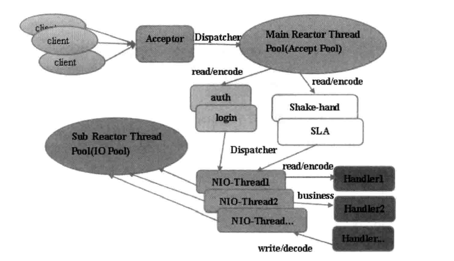
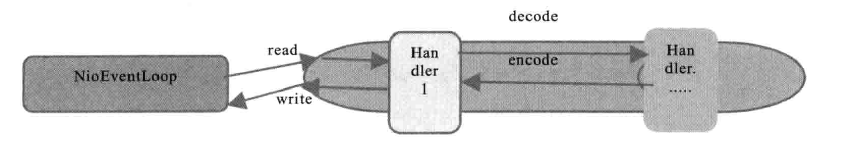
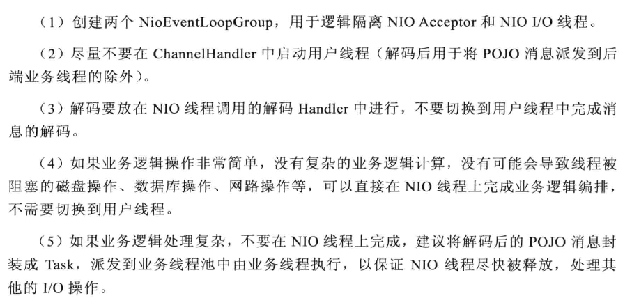

<!DOCTYPE html>


  <html class="light page-post">


<head><meta name="generator" content="Hexo 3.8.0">
  <meta charset="utf-8">
  
  <title>netty线程模型 | 胡思旺</title>

  <meta name="viewport" content="width=device-width, initial-scale=1, maximum-scale=1">

  
    <meta name="keywords" content="全栈,微服务,Java,Netty,Vue,机器学习,Python">
  

  <meta name="description" content="netty线程模型 Reactor模型：异步非阻塞IO，所有的IO操作都不会导致阻塞  Reactor单线程模型 Reactor单线程模型，指所有的I/O操作都在同一个NIO线程上面完成：     作为NIO服务端，接收客户端的TCP连接    作为NIO客户端，向服务端发起TCP连接    读取通信对端的请求或者应答数据    向通信对端发送消息请求或者应答消息     在小容量应用场景下，可以">
<meta property="og:type" content="article">
<meta property="og:title" content="netty线程模型">
<meta property="og:url" content="http://yoursite.com/2018/11/06/netty线程模型/index.html">
<meta property="og:site_name" content="胡思旺">
<meta property="og:description" content="netty线程模型 Reactor模型：异步非阻塞IO，所有的IO操作都不会导致阻塞  Reactor单线程模型 Reactor单线程模型，指所有的I/O操作都在同一个NIO线程上面完成：     作为NIO服务端，接收客户端的TCP连接    作为NIO客户端，向服务端发起TCP连接    读取通信对端的请求或者应答数据    向通信对端发送消息请求或者应答消息     在小容量应用场景下，可以">
<meta property="og:locale" content="default">
<meta property="og:image" content="http://yoursite.com/2018/11/06/netty线程模型/bg1.PNG">
<meta property="og:image" content="http://yoursite.com/2018/11/06/netty线程模型/bg2.PNG">
<meta property="og:image" content="http://yoursite.com/2018/11/06/netty线程模型/bg3.PNG">
<meta property="og:image" content="http://yoursite.com/2018/11/06/netty线程模型/bg4.PNG">
<meta property="og:image" content="http://yoursite.com/2018/11/06/netty线程模型/bg5.PNG">
<meta property="og:image" content="http://yoursite.com/2018/11/06/netty线程模型/bg6.PNG">
<meta property="og:image" content="http://yoursite.com/2018/11/06/netty线程模型/bg7.PNG">
<meta property="og:updated_time" content="2018-12-04T03:49:29.422Z">
<meta name="twitter:card" content="summary">
<meta name="twitter:title" content="netty线程模型">
<meta name="twitter:description" content="netty线程模型 Reactor模型：异步非阻塞IO，所有的IO操作都不会导致阻塞  Reactor单线程模型 Reactor单线程模型，指所有的I/O操作都在同一个NIO线程上面完成：     作为NIO服务端，接收客户端的TCP连接    作为NIO客户端，向服务端发起TCP连接    读取通信对端的请求或者应答数据    向通信对端发送消息请求或者应答消息     在小容量应用场景下，可以">
<meta name="twitter:image" content="http://yoursite.com/2018/11/06/netty线程模型/bg1.PNG">

  

  
    <link rel="icon" href="/favicon.ico">
  

  <link href="/css/styles.css?v=c114cben" rel="stylesheet">


  
    <link rel="stylesheet" href="/css/personal-style.css">
  

  

  
  <script type="text/javascript">
    var _hmt = _hmt || [];
    (function() {
      var hm = document.createElement("script");
      hm.src = "//hm.baidu.com/hm.js?57e94d016e201fba3603a8a2b0263af0";
      var s = document.getElementsByTagName("script")[0];
      s.parentNode.insertBefore(hm, s);
    })();
  </script>


  
  <script type="text/javascript">
	(function(){
	    var bp = document.createElement('script');
	    var curProtocol = window.location.protocol.split(':')[0];
	    if (curProtocol === 'https') {
	        bp.src = 'https://zz.bdstatic.com/linksubmit/push.js';        
	    }
	    else {
	        bp.src = 'http://push.zhanzhang.baidu.com/push.js';
	    }
	    var s = document.getElementsByTagName("script")[0];
	    s.parentNode.insertBefore(bp, s);
	})();
  </script>


  

</head>
</html>
<body>


  
    <span id="toolbox-mobile" class="toolbox-mobile">盒子</span>
  

  <div class="post-header CENTER">
   
  <div class="toolbox">
    <a class="toolbox-entry" href="/">
      <span class="toolbox-entry-text">盒子</span>
      <i class="icon-angle-down"></i>
      <i class="icon-home"></i>
    </a>
    <ul class="list-toolbox">
      
        <li class="item-toolbox">
          <a class="CIRCLE" href="/archives/" rel="noopener noreferrer" target="_self">
            博客
          </a>
        </li>
      
        <li class="item-toolbox">
          <a class="CIRCLE" href="/project/" rel="noopener noreferrer" target="_self">
            项目
          </a>
        </li>
      
        <li class="item-toolbox">
          <a class="CIRCLE" href="/category/" rel="noopener noreferrer" target="_self">
            分类
          </a>
        </li>
      
        <li class="item-toolbox">
          <a class="CIRCLE" href="/search/" rel="noopener noreferrer" target="_self">
            搜索
          </a>
        </li>
      
        <li class="item-toolbox">
          <a class="CIRCLE" href="/about/" rel="noopener noreferrer" target="_self">
            联系
          </a>
        </li>
      
    </ul>
  </div>


</div>


  <div id="toc" class="toc-article">
    <strong class="toc-title">文章目录</strong>
    <ol class="toc"><li class="toc-item toc-level-1"><a class="toc-link" href="#netty线程模型"><span class="toc-text">netty线程模型</span></a><ol class="toc-child"><li class="toc-item toc-level-2"><a class="toc-link" href="#Reactor单线程模型"><span class="toc-text">Reactor单线程模型</span></a></li><li class="toc-item toc-level-2"><a class="toc-link" href="#Reactor多线程模型"><span class="toc-text">Reactor多线程模型</span></a></li><li class="toc-item toc-level-2"><a class="toc-link" href="#主从Reactor多线程模型"><span class="toc-text">主从Reactor多线程模型</span></a></li><li class="toc-item toc-level-2"><a class="toc-link" href="#Netty线程模型"><span class="toc-text">Netty线程模型</span></a></li><li class="toc-item toc-level-2"><a class="toc-link" href="#Netty局部无锁优化"><span class="toc-text">Netty局部无锁优化</span></a></li></ol></li></ol>
  </div>


<div class="content content-post CENTER">
   <article id="post-netty线程模型" class="article article-type-post" itemprop="blogPost">
  <header class="article-header">
    <h1 class="post-title">netty线程模型</h1>

    <div class="article-meta">
      <span>
        <i class="icon-calendar"></i>
        <span>2018.11.06</span>
      </span>

      
        <span class="article-author">
          <i class="icon-user"></i>
          <span>siwang.hu</span>
        </span>
      

      
  <span class="article-category">
    <i class="icon-list"></i>
    <a class="article-category-link" href="/categories/netty/">netty</a>
  </span>


      
        <span>
          <i class="icon-comment"></i>
          <a href="http://www.github.com/siwanghu/2018/11/06/netty线程模型/#disqus_thread"></a>
        </span>
      

      
      
    </div>
  </header>

  <div class="article-content">
    
      <h1 id="netty线程模型"><a href="#netty线程模型" class="headerlink" title="netty线程模型"></a>netty线程模型</h1><blockquote>
<p>Reactor模型：异步非阻塞IO，所有的IO操作都不会导致阻塞</p>
</blockquote>
<h2 id="Reactor单线程模型"><a href="#Reactor单线程模型" class="headerlink" title="Reactor单线程模型"></a>Reactor单线程模型</h2><blockquote>
<p>Reactor单线程模型，指所有的I/O操作都在同一个NIO线程上面完成：  </p>
<p></p>
<ul>
<li><p>作为NIO服务端，接收客户端的TCP连接  </p>
</li>
<li><p>作为NIO客户端，向服务端发起TCP连接  </p>
</li>
<li><p>读取通信对端的请求或者应答数据  </p>
</li>
<li><p>向通信对端发送消息请求或者应答消息  </p>
</li>
</ul>
<p>在小容量应用场景下，可以使用单线程模型，但是对于高负载，大并发的应用场景却并不合适:<br>  </p>
</blockquote>
<h2 id="Reactor多线程模型"><a href="#Reactor多线程模型" class="headerlink" title="Reactor多线程模型"></a>Reactor多线程模型</h2><blockquote>
<p>Reactor多线程模型通过增加一组NIO线程来处理IO操作  </p>
<p>  </p>
<ul>
<li><p>专门的NIO线程（acceptor线程）用于监听服务端，接收客户端的TCP连接请求  </p>
</li>
<li><p>网络IO操作（读写等）由一个NIO线程池负责，线程池可以采用标准的JDK线程池实现，这些线程池负责消息的读取，解码和发送  </p>
</li>
<li><p>一个NIO线程可以同时处理多条链路，但一条链路只对应一个NIO线程,防止发生并发操作问题  </p>
</li>
</ul>
<p>  </p>
</blockquote>
<h2 id="主从Reactor多线程模型"><a href="#主从Reactor多线程模型" class="headerlink" title="主从Reactor多线程模型"></a>主从Reactor多线程模型</h2><blockquote>
<p>  </p>
<p>服务端用于接收客户端连接的不再是一个单独的NIO线程，而是一个独立的NIO线程池。Acceptor接收到客户端TCP连接请求后并处理完成（包含接入认证等），将新创建的SocketChannel注册到IO线程池的某个IO线程上，由它负责SocketChannel的读写和编解码工作  </p>
</blockquote>
<h2 id="Netty线程模型"><a href="#Netty线程模型" class="headerlink" title="Netty线程模型"></a>Netty线程模型</h2><blockquote>
<p><strong>Netty接收客户端请求线程池</strong>  </p>
<ul>
<li>接收客户端TCP连接，初始化Channel参数  </li>
<li>将链路状态变更事件通知给ChannelPipeline  </li>
</ul>
<p><strong>Netty处理IO操作线程池</strong>  </p>
<ul>
<li>异步读取通信对端的数据报，发送读事件到ChannelPipeline  </li>
<li>异步发送消息到通信对端，调用ChannelPipeline的消息发送接口  </li>
<li>执行系统调用Task，定时任务  </li>
</ul>
<p>通过调整线程池的线程个数，是否共享线程池等，Netty的Reactor线程模型可以在单线程，多线程和主从多线程间切换  </p>
</blockquote>
<h2 id="Netty局部无锁优化"><a href="#Netty局部无锁优化" class="headerlink" title="Netty局部无锁优化"></a>Netty局部无锁优化</h2><blockquote>
<p>Netty在IO线程内部进行串行操作，避免多线程竞争导致的性能下降问题，通过调整NIO线程池的线程参数，可以同时启动多个串行化的线程并行运行，局部无锁化的设计模型在实际效果中表现最优：<br><strong>原理图:</strong><br>  </p>
<p>  </p>
<p>线程配置计算公式:  </p>
<ul>
<li><p>一：线程数量=(线程总事件/瓶颈资源时间)*瓶颈资源的线程并行数  </p>
</li>
<li><p>二：QPS=1000/线程总时间*线程数(每秒查询率QPS)  </p>
</li>
<li><p>线程数量配置以实际效果为准  </p>
</li>
</ul>
</blockquote>

    
  </div>

</article>


   
  <div class="text-center donation">
    <div class="inner-donation">
      <span class="btn-donation">支持一下</span>
      <div class="donation-body">
        <div class="tip text-center">扫一扫，支持胡思旺</div>
        <ul>
        
          <li class="item">
            
              <span>微信扫一扫</span>
            
            
          </li>
        
          <li class="item">
            
              <span>支付宝扫一扫</span>
            
            
          </li>
        
        </ul>
      </div>
    </div>
  </div>


   
  <div class="box-prev-next clearfix">
    <a class="show pull-left" href="/2018/11/02/concurrency组件笔记/">
        <i class="icon icon-angle-left"></i>
    </a>
    <a class="show pull-right" href="/2018/11/07/java原子变量类笔记/">
        <i class="icon icon-angle-right"></i>
    </a>
  </div>


   
      <div class="git"></div>
   
</div>


  <a id="backTop" class="back-top">
    <i class="icon-angle-up"></i>
  </a>


  <div class="modal" id="modal">
  <span id="cover" class="cover hide"></span>
  <div id="modal-dialog" class="modal-dialog hide-dialog">
    <div class="modal-header">
      <span id="close" class="btn-close">关闭</span>
    </div>
    <hr>
    <div class="modal-body">
      <ul class="list-toolbox">
        
          <li class="item-toolbox">
            <a class="CIRCLE" href="/archives/" rel="noopener noreferrer" target="_self">
              博客
            </a>
          </li>
        
          <li class="item-toolbox">
            <a class="CIRCLE" href="/project/" rel="noopener noreferrer" target="_self">
              项目
            </a>
          </li>
        
          <li class="item-toolbox">
            <a class="CIRCLE" href="/category/" rel="noopener noreferrer" target="_self">
              分类
            </a>
          </li>
        
          <li class="item-toolbox">
            <a class="CIRCLE" href="/search/" rel="noopener noreferrer" target="_self">
              搜索
            </a>
          </li>
        
          <li class="item-toolbox">
            <a class="CIRCLE" href="/about/" rel="noopener noreferrer" target="_self">
              联系
            </a>
          </li>
        
      </ul>

    </div>
  </div>
</div>


  
      <div class="fexo-comments comments-post">
    
  <section class="disqus-comments">
    <div id="disqus_thread">
      <noscript>Please enable JavaScript to view the <a href="//disqus.com/?ref_noscript">comments powered by Disqus.</a></noscript>
    </div>
  </section>

  <script>
    var disqus_shortname = 'forsigner';
    
    var disqus_url = 'http://yoursite.com/2018/11/06/netty线程模型/';
    
    (function(){
      var dsq = document.createElement('script');
      dsq.type = 'text/javascript';
      dsq.async = true;
      dsq.src = '//' + disqus_shortname + '.disqus.com/embed.js';
      (document.getElementsByTagName('head')[0] || document.getElementsByTagName('body')[0]).appendChild(dsq);
    })();
  </script>

  <script id="dsq-count-scr" src="//forsigner.disqus.com/count.js" async></script>


    

    
    

  <div id="gitment-comments"></div>
  <link rel="stylesheet" href="https://imsun.github.io/gitment/style/default.css">
  <script src="https://imsun.github.io/gitment/dist/gitment.browser.js"></script>
  <script>
    (function () {
      var gitment = new Gitment({
        owner: 'siwanghu',
        repo: 'my-blog-comment',
        oauth: {
          client_id: 'cfd421630edbd2213b4b',
          client_secret: '9584fd5ff8537ec1b2ea3509dda8f7904b1f58bc'
        },
        
        
        
        
        
        
        
        
      })
      gitment.render('gitment-comments')
    })()
  </script>


    

    
    

  </div>

  

  <script type="text/javascript">
  function loadScript(url, callback) {
    var script = document.createElement('script')
    script.type = 'text/javascript';

    if (script.readyState) { //IE
      script.onreadystatechange = function() {
        if (script.readyState == 'loaded' ||
          script.readyState == 'complete') {
          script.onreadystatechange = null;
          callback();
        }
      };
    } else { //Others
      script.onload = function() {
        callback();
      };
    }

    script.src = url;
    document.getElementsByTagName('head')[0].appendChild(script);
  }

  window.onload = function() {
    loadScript('/js/bundle.js?235683', function() {
      // load success
    });
  }
</script>

</body>
</html>
